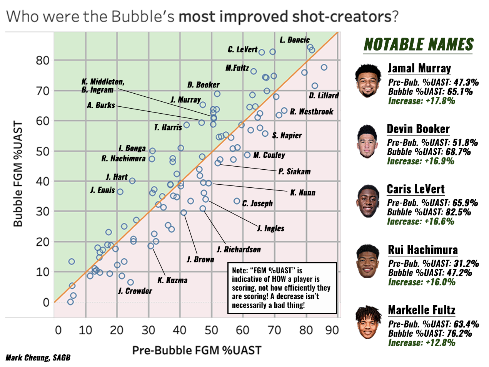

Who were the NBA Bubble’s most improved offensive stars?
By Mark Cheung | Oct 19, 2020
For 133 days, basketball stopped. Arguably the most competitive NBA season since the inception of the Warriors dynasty simply vanished at the swipe of a cotton swab. Games were indefinitely postponed. Practice facilities were shut down. Players were sent home to sequester, some without access to a hoop or a court. From the outside-looking-in, this abrupt season suspension was like an eternal dead-ball stoppage of play. The air had been taken out of the league just as it neared its climax, and understandably so. However, even in a period of complete uneventfulness, the league was still progressing forward - just not in front of our eyes. Sure, not a single minute of NBA basketball was played between March 11th and July 22nd. But through the lens of player development, this 133-day break provided young talent the unprecedented opportunity to take an offseason-sized leap within an ongoing season. The offseason is when stars are born - it’s when the Brandon Ingrams and the Bam Adebayos of the league magically transform into first-time All-Stars. Now imagine players receiving a second offseason to bolster their game. In the midst of closed gyms and stay-at-home orders, players were still finding ways to mature at their craft, just as they would during a normal summer. And once the season finally resumed, it was clear to see which players were able to leverage their time off to take that next leap in their development.
Perhaps the biggest indicator of a player ascending into offensive stardom is a significant improvement in their ability to self create. We can quantify this skill by measuring the proportion of a player’s made baskets that are unassisted - in other words, how often a player creates their own shots. This stat is referred to as FGM %UAST, or in English: percentage of made field goals that are unassisted. Below is a graph of the change in FGM %UAST from the Pre-Bubble games (prior to March 11th) to the Bubble games (seeding games and playoffs) amongst perimeter players. Any player that falls in the green-shaded half of the graph is a player who’s self-creation rates increased in the Bubble. And conversely, any player that falls in the red-shaded half of the graph is a player who’s self-creation rates decreased in the Bubble. Keep in mind that these trends should be taken with a grain of salt because of small sample sizes in the Bubble and because of the evolution of player roles in the playoffs. 
Unsurprisingly, Jamal Murray finds himself amongst the summit of this list - with nearly two-thirds of his made field goals having come at his own hands during the restart. By far, the most noticeable expansion in Murray’s bag of tricks was his off-the-dribble shooting. Murray’s pull-up and stepback three-point percentage elevated to a Denver-like altitude, having nailed 45.1% of such shots in the Bubble (up considerably from his pedestrian 36.5% mark prior to the Bubble).

This newfound ability to be a potent live-dribble threat from distance made an already-deadly Jamal/Jokic two-man game even more impossible for defenses to contain, especially for the drop coverage schemes of the Jazz and the Clippers. Murray feasted on the reluctance of Gobert, Zubac, and Harrell to step up in the pick and roll. And while the Nuggets’ successful results in the playoffs were a gratifying short-term reward, I’d argue that the long-run rewards in terms of Murray’s development are just as exciting. Murray reaching an elite level as a shot-creator means so much more when you consider that he’s already established as a dangerous off-ball relocator, cutter, and movement shooter (ranking in the 73rd percentile as a scorer off cuts and in the 86th percentile as a scorer off screens). Murray’s off-the-dribble shooting improvements weren’t just isolated improvements - they were some of the final puzzle pieces in rounding out his overall scoring package.
Devin Booker might not be a surprising face on this list because of his reputation, but his self-creation rates in the Bubble were certainly a huge deviation from his pre-Bubble play. In fact, before the seeding games, D-Book’s FGM %UAST was quietly his lowest mark since his rookie season, despite his scoring average still hovering above 25.0 points per game. A lot of this had to do with Phoenix’s long-needed acquisition of a starter-caliber point guard in Ricky Rubio, as well as Booker’s (criminally unnoticed) strides in off-ball proficiency - where he ranked in the 94th percentile and the 77th percentile in scoring off cuts and off screens respectively. So what changed in the Bubble? Devin Booker went old school, thriving within the three-point arc with a Kobe and Jordan-esque mid-range game. Booker’s incredible 56.8% mid-range shooting in the Bubble was not only the most efficient percentage in the seeding games amongst similar volume players, but it’s also a more efficient mark than what a league-average three pointer would yield. In fact, despite his three-point rate decreasing by 2.2% in the bubble, Booker was still able to sharply increase both his scoring volume by 4.4 points/game and scoring efficiency by 1.0% TS%. Analytics don’t preach against the existence of the mid-range shot - rather they just advise which players should and shouldn’t be shooting mid-range shots. And Devin Booker has clearly earned the right to take whatever shot he wants.

While not as alluring as self-creation, creation for others is another indispensable piece to a player’s offensive repertoire. And from a player-development lens, it can often be an indicator of both a lofty ceiling and a fertile foundation to build upon. But, it can also be a much more unpredictable area to evaluate and predict. Passing is often referred to as a cerebral skill, which leads many talent evaluators to view a player’s playmaking abilities as more static than dynamic. In practice, this generally means that if a player doesn’t flash any promise as a playmaker early in their career, chances are that they won’t ever turn out to be a great playmaker down the road. This notion that playmaking is “unteachable” is why I find monumental improvements in playmaking by historically poor playmakers so fascinating - and that is where we get to the story of Jayson Tatum As a player who tallied more turnovers than assists in college and who barely cracked the 2.0 assists per game threshold last season, Jayson Tatum was one the least likely candidates to breakout as an improved passer. But, through some improbable miracle, Tatum’s court vision effortlessly skipped a few grades in Orlando - with his once-barren catalog of reads having evolved into a fruitful arsenal of drop offs, one-handed whip passes, and weak-side dimes. During the Bubble, Tatum’s AST% eclipsed the 20.0% mark and he notched 4 games with 8 or more assists. The amount of 8+ assist games Tatum had under his belt in his entire career prior to the restart? Zero.

Perhaps the attribute that enables Tatum the most as a playmaker is his size - with rumors whispering that he’s grown as tall as 6’10” in shoes. During the Bubble games, JT learned to leverage his height to see over defenses, giving him unimpaired cross-court vision on skip-passes. It’s parallel to the line-of-sight advantages taller quarterbacks have in football. Additionally, Tatum also made the most out of his role as Boston’s leading rebounder in the playoffs - flashing some really attentive outlet passes to his teammates leaking out in transition. Tatum’s fellow 2017 draft class member Donovan Mitchell also made tangible advancements in his passing - boasting a 4.5% increase in assist percentage during the restart. While that number doesn’t stack up as highly compared to some of the Bubble’s biggest statistical improvers, I’d argue that Mitchell’s playmaking leap was just as important - if not more - than any of the rest. Anyone who has watched the Utah Jazz during the Mitchell-era knows that he’s a flawed passer - a downfall that even he’s admitted. The reasoning seems two-fold - a combination of both myopia and ball-hoggery. Not only does Mitchell’s tunnel vision prevent him from identifying open teammates, but it also seems like he’s mentally reluctant to pass the ball - as if he believes that the opportunity cost of him not shooting always yields a worse outcome.

But Donovan Mitchell came into Orlando with a new pair of glasses. It’s almost like he’s begun to develop a mental-mapping of the court - a trait that all elite playmakers seemingly possess. On each of these passes, Mitchell knows exactly where all of his passing lanes are - allowing him to scope out open teammates on the complete opposite side of the floor in the span of just a second, even when he’s mid-jump or surrounded by a sea of opposing jerseys. Furthermore, these reads also seem to represent a “lightbulb” moment for Mitchell; a realization that his gravity as a near-25-points-per-game scorer is always going to create open looks for his teammates every time he steps foot in the paint. If I had to make a constructive critique, I’d argue that Mitchell’s reluctance to give up the rock still lingers at times (as some of his passes come only after his scoring attempt had been thwarted), leading to some awkward last-second jump passes. But I’m optimistic that as his confidence in his own passing ability increases, so will his willingness to pass. Additionally, he’s far from clairvoyant (he still looks through a sequential progression of reads rather than just knowing which read will be the open one by reading the help defense). But the fact that his vision has expanded so that he is consistently scanning through all of his reads is easily the more important takeaway. While the Bubble’s main purpose was to bring closure to the current season, it also ended up teasing fans with a trailer of the next season to come - with Jamal Murray, Devin Booker, Jayson Tatum, and Donovan Mitchell all giving us a brief taste of what to expect this Winter. But the scary part is that these four weren’t the only ones dropping hints in Orlando. With players like Caris LeVert, Markelle Fultz, Tyler Herro, and many more all in position to take a leap in their development, I couldn’t be any more excited for the 2020-21 season to tip off.